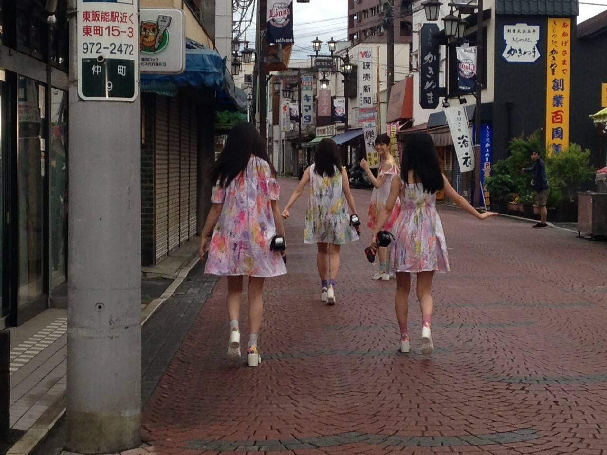

2020/0729Wed愛は与えるものと
歌詞カードを見ながら歌を聴くことが好きなのですが
最近、乃木坂の歌を沢山聴いていて
歌詞が綺麗だなって
MVやお衣装もメンバーの表現も繊細で
最近だとアナスターシャのMVをリピートしてます。
細かくて何回みても楽しめます。
流石衆人監督。☺️
のぎ動画ー。！！！


白米様から約4年、、、
皆んなかっこよく成長しました。
軍団では私自身も沢山成長できました。
最近、乃木坂の歌を沢山聴いていて
歌詞が綺麗だなって
MVやお衣装もメンバーの表現も繊細で
最近だとアナスターシャのMVをリピートしてます。
細かくて何回みても楽しめます。
流石衆人監督。☺️
のぎ動画ー。！！！
白米様から約4年、、、
皆んなかっこよく成長しました。
軍団では私自身も沢山成長できました。

ALL MV COLLECTION２～あの時の彼女たち～
2020年9月9日（水）発売です！！
宜しくお願い致します。☺️
2020/07/29 21:00
コメント(392)
今日も1日お疲れ様でした♪o(^-^)o
そしてそして、今日はたくさんのモバメを、ありがとうございました！o(^-^)o
元気出ましたーー♪o(^-^)o
まずは何より、生誕Tシャツとトートバッグ、注文しましたよー♪(((o(*ﾟ▽ﾟ*)o)))♡
すごく良いデザイン！！
前側のお洒落な感じ、そして後ろの可愛い感じ、バランスが最高です！！o(^▽^o)(o^▽^)o
やっぱセンス有るー♪(人´ω｀*).｡*ﾟ+.*.｡
セミ、どういう意味でしょうね♪
熱く羽ばたけってことでしょうか♪
セミってずっと土のなかにいて、成長し空に羽ばたく。
蘭世ちゃんも成長し、結果が出てきた頃。
セミもシンパシーを感じているのかもですね♪
いっぱい羽ばたけますように♪o(^-^)o
今日も素敵なお写真、ありがとうございます！！
明日も頑張れる！！
明日も素敵な1日になりますように♪o(^-^)o
そしてそして、今日はたくさんのモバメを、ありがとうございました！o(^-^)o
元気出ましたーー♪o(^-^)o
まずは何より、生誕Tシャツとトートバッグ、注文しましたよー♪(((o(*ﾟ▽ﾟ*)o)))♡
すごく良いデザイン！！
前側のお洒落な感じ、そして後ろの可愛い感じ、バランスが最高です！！o(^▽^o)(o^▽^)o
やっぱセンス有るー♪(人´ω｀*).｡*ﾟ+.*.｡
セミ、どういう意味でしょうね♪
熱く羽ばたけってことでしょうか♪
セミってずっと土のなかにいて、成長し空に羽ばたく。
蘭世ちゃんも成長し、結果が出てきた頃。
セミもシンパシーを感じているのかもですね♪
いっぱい羽ばたけますように♪o(^-^)o
今日も素敵なお写真、ありがとうございます！！
明日も頑張れる！！
明日も素敵な1日になりますように♪o(^-^)o
今5時前〜
ひょろひょろくんと寝てるかな？
気づけばもう８月。
東京も梅雨明けかなー
と思ってたら、たった今雨が降ってきた(´Д` )
ブログは勿論毎回見てるよ！
コメントも書いてるし！
元気なのがわかるのは良きだね
今日親から電話掛かってきたんだけど、蘭世は元気？って聞かれたよ笑
セミ(ﾟ∀ﾟ)
突進自体レアな体験だと思うよ
毎年となると何が理由があるんだろうな
風景と溶け込んでてステルス的な感じでセミには見えてなかったりして笑
早速生誕Tシャツやトートバッグなどなど生誕グッズ注文したよ！
早く着て行ける日が来るといいな^ ^
おはよう
今日も蘭世
今日から8月！
近畿でも昨日梅雨明けが発表されていよいよ夏が来ますな！ってな感じ。
でも今年の夏は今までとはちょっと違うんだろうな。
早くコロナ終息してくれ～
だけど、こういう時だからこそ日々を大切にしていかないといけないな。
特に蘭世
メ―ルにブログそれがすべて一つ一つの宝物やからな
さて俺も今日も元気です！
今日も一日を沢山笑える日にお互いしような
今日も出会う方々や頂けるお仕事に感謝して初心を忘れずに楽しんで笑顔で居られる日にしよう。
産んで育ててくれた御両親にも常に感謝を…
じゃきっとまた後で(´▽｀)
いってらっしゃい！
蘭世〜、おはよー
モバメありがとう〜
生誕グッズもちろん予約したよー☺️
蘭世のこだわりが詰まってるデザインが素敵やった
握手会無いから生誕祭が出来ないのが寂しいね
今年の誕生日はSNSで思いきり盛り上がろう！
今日も暑くなりそうだから体調気をつけてね。
蘭世にとってハッピーな1日であれー
モバメありがとう〜
生誕グッズもちろん予約したよー☺️
蘭世のこだわりが詰まってるデザインが素敵やった
握手会無いから生誕祭が出来ないのが寂しいね
今年の誕生日はSNSで思いきり盛り上がろう！
今日も暑くなりそうだから体調気をつけてね。
蘭世にとってハッピーな1日であれー
らんぜ、おはよう！
8月になったね。
がんばろう！
8月になったね。
がんばろう！
おはようございますらんぜ(^^)
今日あたり、そちらも梅雨が明ける！かなぁ、、、
あっついですね！そんなコトないかな？けっこう東京はあさ22度付近という事もあるみたいですよね。朝の現在気温を見てて驚くときがあります(^^)
昨日は、メールありがとう！！
相棒の可愛いひょろひょろくんと、一緒にスヤスヤと眠れましたか？1日おつかれさまでした(^^)
ウインクがとっても可愛かった！
おやすみメールの最後のところで、らんぜのユーモアセンスを感じました(^^)♪
らんぜとひょろひょろくんがスヤスヤおやすみしてるところを想うと、そんな可愛い場面をイラストにしたいなあって、すっごく思うんですけど、あー！私には絵心がないんですTT
可愛いイラスト描けたらなあ、、、って、よく考えますョ。
トートバッグ！Tシャツに続いて、トートのデザインもオフィシャルウェブショップでみてきましたよ〜(^^)
おしゃれですっ！これは使いたいですね！トートのあの布色にマッチしたプリント感だと思いました。らんぜの今年のトートを肩にお出かけしたいです(^^)d
ただ、去年のもそうなのですが、いざ使う前にあ！なんか、もったいないな、、、って考えてしまうんですよっ！わたしは、、、
これだめですよね^^;
大事に使えば、使ってもいいかな？
着ないと、使わないと逆にもったいないよね？
よし！着ます！そしてトートも使います！！
私はリュックじゃなくていつも肩掛けバッグなので、すごく楽しみにしてます(^^)！
そして、Tシャツもどのパンツ、靴に合わせるか、今からもうすでに色々想像しています♪
ホント楽しみ(^^)♪
あ！タオルもとても楽しみにしてます！らんぜがプリントされた綺麗なタオル(^^)！
先月は、オフィシャルウェブショップにて、らんぜの個別ペンライトをゲット出来ましたよ！
去年ね、福岡の全国ツアーのライブで、やっぱり公式のペンライトって発色がすごくいいなあって、これはとっても思ったんですよ。現場で直に体感しましたね。
だから、らんぜの名前入りのサイリウムをゲット出来て、ヤッター(^^)！です！
まだ、届くのは先の話ですけどね^^;
今日はお片付けをがんばります。まだまだ終わらないんですよね、、、らんぜに手伝って欲しいです！しかし、散らかり具合にあきれられそうです^^; らんぜはおそうじ、得意だよね♪
夏バテにお気をつけて、梅雨の8月という未知の領域を、らんぜ楽しんでください(^^)
また書きますね(^^)/
ごきげんよう、らんぜ。
今日あたり、そちらも梅雨が明ける！かなぁ、、、
あっついですね！そんなコトないかな？けっこう東京はあさ22度付近という事もあるみたいですよね。朝の現在気温を見てて驚くときがあります(^^)
昨日は、メールありがとう！！
相棒の可愛いひょろひょろくんと、一緒にスヤスヤと眠れましたか？1日おつかれさまでした(^^)
ウインクがとっても可愛かった！
おやすみメールの最後のところで、らんぜのユーモアセンスを感じました(^^)♪
らんぜとひょろひょろくんがスヤスヤおやすみしてるところを想うと、そんな可愛い場面をイラストにしたいなあって、すっごく思うんですけど、あー！私には絵心がないんですTT
可愛いイラスト描けたらなあ、、、って、よく考えますョ。
トートバッグ！Tシャツに続いて、トートのデザインもオフィシャルウェブショップでみてきましたよ〜(^^)
おしゃれですっ！これは使いたいですね！トートのあの布色にマッチしたプリント感だと思いました。らんぜの今年のトートを肩にお出かけしたいです(^^)d
ただ、去年のもそうなのですが、いざ使う前にあ！なんか、もったいないな、、、って考えてしまうんですよっ！わたしは、、、
これだめですよね^^;
大事に使えば、使ってもいいかな？
着ないと、使わないと逆にもったいないよね？
よし！着ます！そしてトートも使います！！
私はリュックじゃなくていつも肩掛けバッグなので、すごく楽しみにしてます(^^)！
そして、Tシャツもどのパンツ、靴に合わせるか、今からもうすでに色々想像しています♪
ホント楽しみ(^^)♪
あ！タオルもとても楽しみにしてます！らんぜがプリントされた綺麗なタオル(^^)！
先月は、オフィシャルウェブショップにて、らんぜの個別ペンライトをゲット出来ましたよ！
去年ね、福岡の全国ツアーのライブで、やっぱり公式のペンライトって発色がすごくいいなあって、これはとっても思ったんですよ。現場で直に体感しましたね。
だから、らんぜの名前入りのサイリウムをゲット出来て、ヤッター(^^)！です！
まだ、届くのは先の話ですけどね^^;
今日はお片付けをがんばります。まだまだ終わらないんですよね、、、らんぜに手伝って欲しいです！しかし、散らかり具合にあきれられそうです^^; らんぜはおそうじ、得意だよね♪
夏バテにお気をつけて、梅雨の8月という未知の領域を、らんぜ楽しんでください(^^)
また書きますね(^^)/
ごきげんよう、らんぜ。
らんぜおはよー!
昨日もメールありがとう!
朝からいい天気です!
セミもらんぜに夏が来るよって伝えたいのでは?
ブログ更新ついてこれてるよ!もっとたくさんの人にらんぜを知ってもらいたいです!自分の周りにはおすすめしてます!
生誕Tシャツ即予約したよ!今回のTシャツもすごくいいデザインです!LOVE&✌️いい言葉です!
ひょろひょろくんもまたね!
また夜書きます!
ではでは
昨日もメールありがとう!
朝からいい天気です!
セミもらんぜに夏が来るよって伝えたいのでは?
ブログ更新ついてこれてるよ!もっとたくさんの人にらんぜを知ってもらいたいです!自分の周りにはおすすめしてます!
生誕Tシャツ即予約したよ!今回のTシャツもすごくいいデザインです!LOVE&✌️いい言葉です!
ひょろひょろくんもまたね!
また夜書きます!
ではでは
メールありがとー！
地球と蘭世が喜ぶトート！
一式買ったよー！
アナスターシャのMV生写真も楽しみにしてるー☺️
地球と蘭世が喜ぶトート！
一式買ったよー！
アナスターシャのMV生写真も楽しみにしてるー☺️
おつかれです！
蘭世、こんにちは〜。
遅くなりましたが、ブログ更新有難う！
そして、白米様4周年おめでとう！！
早いねー( ´_ゝ`)。
乃木坂を卒業しても軍団の卒業は無い、という言葉を信じてます(笑)。
5人での武道館、いつか実現するのを楽しみにしてますよ！
昨夜、生誕グッズのデザイン発表されたね:)。
今年のデザインは更に普段着として着れる素敵なものになってるし、おしゃれ感が♪
モバメ見て色々な意味が込められてるのも分かりました。
有難う！早速予約しました〜♪
今日から8月。
また気持ちも新たにやって行こうねぇ(^ ^)。
ではでは。
遅くなりましたが、ブログ更新有難う！
そして、白米様4周年おめでとう！！
早いねー( ´_ゝ`)。
乃木坂を卒業しても軍団の卒業は無い、という言葉を信じてます(笑)。
5人での武道館、いつか実現するのを楽しみにしてますよ！
昨夜、生誕グッズのデザイン発表されたね:)。
今年のデザインは更に普段着として着れる素敵なものになってるし、おしゃれ感が♪
モバメ見て色々な意味が込められてるのも分かりました。
有難う！早速予約しました〜♪
今日から8月。
また気持ちも新たにやって行こうねぇ(^ ^)。
ではでは。
2回目のコメントですが、少しばかり悩みを聞いてもらいたいのです。僕は昇段試験を受ける予定なのですが、受ける前から怖がってしまい、受けるのが怖いのです。大人数いて、長時間の緊張感にさらされるのが、苦手でトラウマになっています。昇段試験くらいで、怖がっているのが情けなくて、悔しくて。今までにできなかったことが、たくさんあるせいで、とても自信を失ってしまい、「自分のできることって何だろう？」こんなことばかり頭をよぎります。こんなに何もできなくていいのかな？って思います。頭で考えすぎるのが、ここまで災いするなんて。自分の性格が、生きる世界に出会いたい！わがままですかね？
自分の良いところが活きる場所で、輝いてみたいです。初めから何でもできるわけない。分かっていても、挑戦するのは難しいって思います。
自分の良いところが活きる場所で、輝いてみたいです。初めから何でもできるわけない。分かっていても、挑戦するのは難しいって思います。
らんぜ、こんにちは(^^)
今日から8月やね！
今年はいろいろあるからなのか？
例年以上に月日の流れの速さを感じます。
毎夏、蝉の突進に悩まされてる
らんぜですね（笑）
蝉やけど
何かに愛されてると思って
前向きに捉えましょう(^^)
自分にとっての蝉は
大好きな夏本番を知らせてくれ
風情を感じさせてくれる
生き物ですね(^^)
だから夏の終わりを告げるかように
その鳴き声が少なくなってきたら
寂しく感じます。
それとブログ！
頻繁に更新してくれて
ありがとう(^^)
更新されたら
出来るだけ早く
読むようにしてるんやけど
ここ最近
仕事が忙しいので
コメントは遅れがちになってしまってます。
ほんと申し訳ない(. .)
ブログ更新については
こちら側を気にせず
らんぜが思うように
していってくださいね(^^)
ではまた！元気で
今日から8月やね！
今年はいろいろあるからなのか？
例年以上に月日の流れの速さを感じます。
毎夏、蝉の突進に悩まされてる
らんぜですね（笑）
蝉やけど
何かに愛されてると思って
前向きに捉えましょう(^^)
自分にとっての蝉は
大好きな夏本番を知らせてくれ
風情を感じさせてくれる
生き物ですね(^^)
だから夏の終わりを告げるかように
その鳴き声が少なくなってきたら
寂しく感じます。
それとブログ！
頻繁に更新してくれて
ありがとう(^^)
更新されたら
出来るだけ早く
読むようにしてるんやけど
ここ最近
仕事が忙しいので
コメントは遅れがちになってしまってます。
ほんと申し訳ない(. .)
ブログ更新については
こちら側を気にせず
らんぜが思うように
していってくださいね(^^)
ではまた！元気で
やぁ(｡･ω･)ﾉﾞ最愛なる蘭世
今日はめちゃくちゃ暑い！
梅雨明けしてもうまさに夏日よりやん
兎に角水分補強をしないとな。
あ、今日さぁ大発見してしまった！
6月10日のブログのさ馬のイヤリングあったやん、それをな今日の朝昔の画像とか観てて俺がまだしらに頃の雑誌のグラビアでそのイヤリングをつけてたんよ！
『別冊CD&DLでーた My Girl vol.7』って雑誌2015年やでめちゃくちゃ物持ち良いやんか！！！
物を大事にする蘭世
朝からめっちゃテンションあがったわ
でもう昼って言うな、時間経つの早っ！！
昼からもさお互いに小さな事でも喜んだり楽しんだりできるように過ごそうな
それじゃきっとまた後で(｡･ω･)ﾉﾞ
こんにちは、蘭世！
アナスターシャ、初めて聴いて見てから、
MV何回も見てるよー(^^)
もちろん、滑走路も半端なく好きですよ！！
生誕Tシャツ、デザイン素敵でした(^｡^)
梅雨明けもしたしこれから暑くなるから、
体調には気をつけてね！！
いつもありがとう♪
アナスターシャ、初めて聴いて見てから、
MV何回も見てるよー(^^)
もちろん、滑走路も半端なく好きですよ！！
生誕Tシャツ、デザイン素敵でした(^｡^)
梅雨明けもしたしこれから暑くなるから、
体調には気をつけてね！！
いつもありがとう♪
蘭世！今年の夏も一緒に楽しもうね！(^_^)ｖ
ブログの更新、ついていけてますよー！
こういうファンの立場からでも、色々と考えてくれる事に本当に感謝です
そしてそう！そーなんですよ！！
元気でいてくれてる事が１番なんだけど、辛いときも楽しい時も、苦しい時も嬉しい時も、ファンは大切な蘭世の事を知り、いつでも共有して応援したいと思ってるから、他愛のない近況報告を聞くだけで、安心するし嬉しいんだよ
そしてRanzeはやはり世界も見ているんだね
私は蘭世がエンターテナーである限り、これからも応援し、夢への一歩を踏み出せる事を心からいつも願っています。
蘭世ブログ更新ありがとう 更新頻度多くてうれしいよ
Twitterでも出来る限り多くの人に蘭世や乃木坂を知ってもらいたくてハッシュタグをつけるようにしてます！ MVなつかしいね
このタイミングにもう一度これまでの軌跡を振り返ってみるのもいいよね
今日生誕Tシャツ予約しました！17歳から22歳まで毎年購入して６着目
蘭世と一緒にここまで歩んでこれたっていうのも本当に幸せな事だなーと。。。最近コメント少なめだけど心配しないでね！またコメントするね
こんにちは☺︎
とっても暑いですね。夏やーーー
今日はママと近所のお店にかき氷を食べに行ってきました。
夏はかき氷とアイスがより美味しい季節。
2020年一発目は毎年行くお店の宇治氷に白玉をトッピングしたよ！
美味しかった〜☺️
そう！蘭世ちゃんの生誕Tシャツと言わずママに"このTシャツどーやろ？"って見せたらね、
"めっちゃお洒落やん、どこのなん？"って言われたよ！
やっぱり蘭世ちゃんのセンスって素晴らしいなって改めて思いました☺️
それでね、私の身長160cmなんだけどサイズどれが良いかな？迷ってて、、、
ピッタリサイズじゃなくて大きめに着たいなって思ってるんです(＞＜)
MかLかな〜？サイズ感どんな感じか分かるなら教えてほしいです！
今日はviviを買ってきたので、今からレポートもやりつつお洒落を勉強したいと思います◎
とっても暑いですね。夏やーーー
今日はママと近所のお店にかき氷を食べに行ってきました。
夏はかき氷とアイスがより美味しい季節。
2020年一発目は毎年行くお店の宇治氷に白玉をトッピングしたよ！
美味しかった〜☺️
そう！蘭世ちゃんの生誕Tシャツと言わずママに"このTシャツどーやろ？"って見せたらね、
"めっちゃお洒落やん、どこのなん？"って言われたよ！
やっぱり蘭世ちゃんのセンスって素晴らしいなって改めて思いました☺️
それでね、私の身長160cmなんだけどサイズどれが良いかな？迷ってて、、、
ピッタリサイズじゃなくて大きめに着たいなって思ってるんです(＞＜)
MかLかな〜？サイズ感どんな感じか分かるなら教えてほしいです！
今日はviviを買ってきたので、今からレポートもやりつつお洒落を勉強したいと思います◎
モバメありがとう！
ブログもしっかり読んでるよ
夏といえばセミですが、今年も蘭世の前に来たみたいで
俺は玄関の前にいらっしゃいましたが、、、
衝突はされませんでした笑
生誕グッズ見ました！
いつもとは違うデザインで良き！
全部買いました
蘭世の描くイラストも好きなんだけど
東京は梅雨明けしました
これから暑くなるから体調気をつけて！！
シブヤノオトも良かったよ！！
またね！
Love &peace
蘭世さん
こんにちは
いよぽん の先輩、乃木人ひでき です。
8月に入り暑くなってきましたねぇ～。水分補給はもちろんのこと、日焼けやスキンケアなど体調管理をしっかりとね。 でないと、いよぽん が心配するので(笑)
今年は8thバスラの後からイベントがほぼなくなり、お会いできずに残念です。
握手会で、いよぽん と連番した思い出が懐かしいです ♪
また、握手会が再開されたら、乃木人の、いよぽん、亮、東梅田のゆうき (乃木人)、乃木人なおと、乃木人ひできの５人で伺いますね♪
がんばろー！
えいえいおー^ - ^
Thanks,
Hideki
乃木人ひでき
こんにちは
いよぽん の先輩、乃木人ひでき です。
8月に入り暑くなってきましたねぇ～。水分補給はもちろんのこと、日焼けやスキンケアなど体調管理をしっかりとね。 でないと、いよぽん が心配するので(笑)
今年は8thバスラの後からイベントがほぼなくなり、お会いできずに残念です。
握手会で、いよぽん と連番した思い出が懐かしいです ♪
また、握手会が再開されたら、乃木人の、いよぽん、亮、東梅田のゆうき (乃木人)、乃木人なおと、乃木人ひできの５人で伺いますね♪
がんばろー！
えいえいおー^ - ^
Thanks,
Hideki
乃木人ひでき
蘭世、お疲れさまです(*^ー^)ノ♪
DAImonです(^^ゞ
やっぱり俺は蘭世推しで蘭世が大好きです(*´∀`)♪
だから、これからもよろしくお願いしますね(〃⌒ー⌒〃)ゞ
生誕グッズ買ったよ～(。^。^。)
アナスターシャグッズもd(⌒ー⌒)!
届くのが楽しみです(^^)d
去年の生誕Tシャツは握手会に着ていったら、蘭世に『初めてファンの人が着ているところ見た』って言われたのは良い思い出です(*´∀`)♪
あれはなんか本当に嬉しかった(〃ω〃)
今年の生誕 Tシャツも着て蘭世と会えたら良いな(*´ー｀*)
ライブにも着ていける日を楽しみに日々頑張ろうp(^-^)q
会えない日々が続くけど、だからこそまた会える時までお互いに胸をはって会えるように頑張っていきましょう(o≧▽゜)o
また会える時まで元気でいてね(o⌒∇⌒o)
DAImonです(^^ゞ
やっぱり俺は蘭世推しで蘭世が大好きです(*´∀`)♪
だから、これからもよろしくお願いしますね(〃⌒ー⌒〃)ゞ
生誕グッズ買ったよ～(。^。^。)
アナスターシャグッズもd(⌒ー⌒)!
届くのが楽しみです(^^)d
去年の生誕Tシャツは握手会に着ていったら、蘭世に『初めてファンの人が着ているところ見た』って言われたのは良い思い出です(*´∀`)♪
あれはなんか本当に嬉しかった(〃ω〃)
今年の生誕 Tシャツも着て蘭世と会えたら良いな(*´ー｀*)
ライブにも着ていける日を楽しみに日々頑張ろうp(^-^)q
会えない日々が続くけど、だからこそまた会える時までお互いに胸をはって会えるように頑張っていきましょう(o≧▽゜)o
また会える時まで元気でいてね(o⌒∇⌒o)
蘭世ちゃんの好きな髪型、髪は長いと、バリエーションやアレンジが出来ますね。今の蘭世ちゃんの髪を流した感じや、三つ編みお下げが好きです。今日も、モバメをありがとう！
蘭世さんこんにちは
モバメの件
好きな髪型は
アシンメトリーな髪型です
あとはどこかしら結んである髪型
ポニーテールとかツインテールとか
特にサイドポニーとかは
アシンメトリーだしいいね
(こ・っ・ぺ)
モバメの件
好きな髪型は
アシンメトリーな髪型です
あとはどこかしら結んである髪型
ポニーテールとかツインテールとか
特にサイドポニーとかは
アシンメトリーだしいいね
(こ・っ・ぺ)
めちゃくちゃ短い
ブログコメントになりますが
乃木中の沖縄収録の
手作りバンジーに乗ってた日の
髪型が好きです！！
(今日のモバメへの返信です)
色んな蘭世さんが見れることを
楽しみにしてます
質問返しやるか分からないですが
蘭世さんからして
この髪型や髪色の時の
ファンの反応が良かったとかありますか？
また、ご自身でやってみたい、
挑戦してみたい、髪型や髪色はありますか？
ブログコメントになりますが
乃木中の沖縄収録の
手作りバンジーに乗ってた日の
髪型が好きです！！
(今日のモバメへの返信です)
色んな蘭世さんが見れることを
楽しみにしてます
質問返しやるか分からないですが
蘭世さんからして
この髪型や髪色の時の
ファンの反応が良かったとかありますか？
また、ご自身でやってみたい、
挑戦してみたい、髪型や髪色はありますか？
やぁ(｡･ω･)ﾉﾞ最愛なる蘭世
メ―ルありがとう！
俺はね～ポニテ！
ポニテって言うても高めのポニテな
で後はオフの時のちょんまげ
前髪あげておでこ出してるの可愛い
結構蘭世
そういうとこ可愛い
きっとままた後で(｡･ω･)ノ
ちょっと前のモバメから何個か返信します！
暇なときで良いので目を通していただけるとありがたいです、
まずはセミの話
自転車とか乗ってるとありそうだけど…でもなかなかある事じゃないから縁起がいいのかも？
それかセミも蘭世さんの良さが分かってるのかもですね！(いいことなのかな？)
ブログ更新頻度の話
更新頻度が高ければそれはそれで嬉しいですけど、蘭世さんがしたいようにしてくれるのが1番良きです！モバメも何気ない時にしてくれますし、ブログだって普段から更新が早い方だと思いますので
ちゃんとついていけてるので大丈夫です！毎回コメントしますよ～！
そして拡散もしてます！リツイートだったり、リンク貼って共有したり、できるだけ蘭世さんの言葉が皆さんに届くように頑張ります！
生誕祭グッズの話
今年も予約完了です！テイスト変えたんですね！いつもキャラクターが多い感じがするので新鮮で良きです！
去年のもまだ着てます！今年のも着やすそうなので秋頃は着て出かけますよー！トートバッグも去年の使いやすくてずっと使ってたので、環境のために今年もいっぱい使います！
LOVE＆PEACE、蘭世さんからよく聞く言葉ですね。この前のブログのタイトルもでしたねいいテーマだと思います！！
髪型の話
毎回変えてくれて嬉しいです～ずっと新鮮な感じがするので！
ストレートも好きですし、おさげの時も雑誌でありましたね、アップトゥボーイさんだったかな？
でもハーフアップが良きかも！握手会の画像で見た気がする！また見てみたい～
モバメの返信はこんなところですかな、また次はできたらすぐにでもコメント書きます！
蘭世さんのペースで大丈夫なので、待ってます！
そして今回の1曲！
chelmicoさんで「Easy Breezy」！
アニメ版の「映像研には手を出すな」の主題歌です
最強の世界を作り出す3人に相応しい派手な曲調、歌詞となっております！
アニメも凄く面白い作品となっております！飛鳥さん、梅澤さん、美月さんの実写版も楽しみですね！
今回もありがとうございました！
黒T
暇なときで良いので目を通していただけるとありがたいです、
まずはセミの話
自転車とか乗ってるとありそうだけど…でもなかなかある事じゃないから縁起がいいのかも？
それかセミも蘭世さんの良さが分かってるのかもですね！(いいことなのかな？)
ブログ更新頻度の話
更新頻度が高ければそれはそれで嬉しいですけど、蘭世さんがしたいようにしてくれるのが1番良きです！モバメも何気ない時にしてくれますし、ブログだって普段から更新が早い方だと思いますので
ちゃんとついていけてるので大丈夫です！毎回コメントしますよ～！
そして拡散もしてます！リツイートだったり、リンク貼って共有したり、できるだけ蘭世さんの言葉が皆さんに届くように頑張ります！
生誕祭グッズの話
今年も予約完了です！テイスト変えたんですね！いつもキャラクターが多い感じがするので新鮮で良きです！
去年のもまだ着てます！今年のも着やすそうなので秋頃は着て出かけますよー！トートバッグも去年の使いやすくてずっと使ってたので、環境のために今年もいっぱい使います！
LOVE＆PEACE、蘭世さんからよく聞く言葉ですね。この前のブログのタイトルもでしたねいいテーマだと思います！！
髪型の話
毎回変えてくれて嬉しいです～ずっと新鮮な感じがするので！
ストレートも好きですし、おさげの時も雑誌でありましたね、アップトゥボーイさんだったかな？
でもハーフアップが良きかも！握手会の画像で見た気がする！また見てみたい～
モバメの返信はこんなところですかな、また次はできたらすぐにでもコメント書きます！
蘭世さんのペースで大丈夫なので、待ってます！
そして今回の1曲！
chelmicoさんで「Easy Breezy」！
アニメ版の「映像研には手を出すな」の主題歌です
最強の世界を作り出す3人に相応しい派手な曲調、歌詞となっております！
アニメも凄く面白い作品となっております！飛鳥さん、梅澤さん、美月さんの実写版も楽しみですね！
今回もありがとうございました！
黒T
蘭世、お疲れさまです(*^ー^)ノ♪
DAImonです(^^ゞ
髪型、バスラのハーフツイン、夏のお団子はなんか季節限定の特別感もあって好きです(*´∀`)♪
ライブでやる編み込み(って言うのかな？)も良きかな(^^)d
でも、なんか忘れられないのは握手会で会ったときのポニーテールでめちゃめちゃ笑ってた蘭世の笑顔かな("⌒∇⌒")
俺の思い出なので参考に成るかわからないけど、頭に思い浮かんだ蘭世の髪型をあげてみました(^-^)/
DAImonです(^^ゞ
髪型、バスラのハーフツイン、夏のお団子はなんか季節限定の特別感もあって好きです(*´∀`)♪
ライブでやる編み込み(って言うのかな？)も良きかな(^^)d
でも、なんか忘れられないのは握手会で会ったときのポニーテールでめちゃめちゃ笑ってた蘭世の笑顔かな("⌒∇⌒")
俺の思い出なので参考に成るかわからないけど、頭に思い浮かんだ蘭世の髪型をあげてみました(^-^)/
モバメ見ました
髪色はアッシュ系が好きです
髪色はアッシュ系が好きです
らんらん、こんばんは！
生誕グッズ～!! 注文した～!(^^)!
握手会に着ていくTｼｬﾂが変わる時。もうそんな時期になったんや…。
世の中、状況良くならんまま今になったのは残念やけど。
Tｼｬﾂ届くの楽しみにしてる。それ着て、会いに行けるのもっと楽しみに待ってる～。!(^^)!
それと、好きな髪型…。お団子と音符ちゃん とゆる巻きハーフツインかな～。(^^)
生誕グッズ～!! 注文した～!(^^)!
握手会に着ていくTｼｬﾂが変わる時。もうそんな時期になったんや…。
世の中、状況良くならんまま今になったのは残念やけど。
Tｼｬﾂ届くの楽しみにしてる。それ着て、会いに行けるのもっと楽しみに待ってる～。!(^^)!
それと、好きな髪型…。お団子と音符ちゃん とゆる巻きハーフツインかな～。(^^)
ツインテール......
ショートヘア......
前髪なし......
全部いいですね
ショートヘア......
前髪なし......
全部いいですね
こんばんはらんぜ(^^)
メール、ありがとう！！
らんぜの好きな髪型はね、、、調べたよ♪あの髪型の名前なんて言うのかなぁ、って、そしたら、ハーフアップ！です(^^)d
ハーフアップと呼ばれるものです！細かくは色々と発展形があるのでしょ？アレンジというか、それで細かく違いがうまれてくるのかな、、、
スタイルとしては、ハーフアップ！なのです(^^)
らんぜはあの髪型とても似合いますねえ(^^)
ロミオとジュリエットのジュリエットみたい！
勝手な印象だけどどうもあの髪型が私の中ではジュリエットと、なぜかイメージがあるんですよね、、、なにかの映画で観たりしたのかな、、、
らんぜにとってもお似合いです♪やっぱりお姫様みたい！綺麗だなあ(^^)v
もちろん、いろんな髪型、らんぜお似合いですけどね！！
もしよろしければ、参考にしてくださいませ〜。
1日に、そちらも梅雨明けいたしましたね！
梅雨明けましておめでとうございます(^^)v
カラッとしましたか！？大して昨日と変わらないよね^^; 変わらず暑いよねぇ、でもまたちょっとカァーっと、暑さが増す気がしますね。
ホント熱中症、気をつけないとね、うん。
晩ごはん、らんぜは召し上がられましたか。
ひょっとしたら食欲をなくしているかもですね、この暑さだから、、、
スムージーとか、スーッと栄養とれますから。
らんぜ好きだよね、スムージー(^^)
楽しいサタデーナイトをらんぜが過ごせていますように。
また書きますね(^^)/
メール、ありがとう！！
らんぜの好きな髪型はね、、、調べたよ♪あの髪型の名前なんて言うのかなぁ、って、そしたら、ハーフアップ！です(^^)d
ハーフアップと呼ばれるものです！細かくは色々と発展形があるのでしょ？アレンジというか、それで細かく違いがうまれてくるのかな、、、
スタイルとしては、ハーフアップ！なのです(^^)
らんぜはあの髪型とても似合いますねえ(^^)
ロミオとジュリエットのジュリエットみたい！
勝手な印象だけどどうもあの髪型が私の中ではジュリエットと、なぜかイメージがあるんですよね、、、なにかの映画で観たりしたのかな、、、
らんぜにとってもお似合いです♪やっぱりお姫様みたい！綺麗だなあ(^^)v
もちろん、いろんな髪型、らんぜお似合いですけどね！！
もしよろしければ、参考にしてくださいませ〜。
1日に、そちらも梅雨明けいたしましたね！
梅雨明けましておめでとうございます(^^)v
カラッとしましたか！？大して昨日と変わらないよね^^; 変わらず暑いよねぇ、でもまたちょっとカァーっと、暑さが増す気がしますね。
ホント熱中症、気をつけないとね、うん。
晩ごはん、らんぜは召し上がられましたか。
ひょっとしたら食欲をなくしているかもですね、この暑さだから、、、
スムージーとか、スーッと栄養とれますから。
らんぜ好きだよね、スムージー(^^)
楽しいサタデーナイトをらんぜが過ごせていますように。
また書きますね(^^)/
蘭世ちゃん、こんばんは
蘭世ちゃんの髪型で好きなのは、前髪を上げておでこを出してる感じのが好きです！
もう8月ですね…
暑すぎる、暑すぎますよ…
屋上での仕事は辛すぎます…
三日連続で熱中症になりかけてます
水分補給だけじゃなく、塩分補給もしっかりしないとダメですね
体がすごくだるいです
即攻元気飲んでゆっくり休みたいと思います
蘭世ちゃんも、熱中症には気をつけてくださいねー
そういえば今朝、木梨の会っていうラジオがあるんですけど、そこにゲストで秋元康さんとAK-69さんが出てたんですけど、めっちゃ面白かったです 秋元さんもラッパーになりたかったのかー笑笑
明日は休みなので、今日はゆっくりしたいと思います
蘭世ちゃんも体調管理には気をつけて、お仕事頑張っていきましょうー
えいえいおー！
蘭世今日もメールありがとう！
好きな髪型、おさげのツインテールに一票です！
理由はUTBの蘭世があまりにも可愛かったから！(*^^*)
是非ご参考までに♪
好きな髪型、おさげのツインテールに一票です！
理由はUTBの蘭世があまりにも可愛かったから！(*^^*)
是非ご参考までに♪
蘭世ちゃんモバメありがとう♪( ´θ｀)♪
どの髪型も好きやけど、個人的にはポニテ見てみたいわ^_^
検討して下さいな
どの髪型も好きやけど、個人的にはポニテ見てみたいわ^_^
検討して下さいな
モバメありがとう！髪型お団子がいいなー
いつになったら、蘭世に会えるのかな？コロナに負けるな、えいえいおー
蘭世
お疲れ様です。
蘭世にやって欲しい髪型はねぇ、シブヤノオトの隣人でもやってたし最近良く見せてくれる、後ろで編み込んでるお下げが好きですね。
あとは、普段絶対やらないと思うハーフツインも見てみたいし、前髪流したのも好きです。
お団子とかもかな
蘭世はいろいろやってくれるから、新しいものじゃなくて前にやったアレをもう一度って感じかな。
今日もありがとう
おやすみなさい
またね
お疲れ様です。
蘭世にやって欲しい髪型はねぇ、シブヤノオトの隣人でもやってたし最近良く見せてくれる、後ろで編み込んでるお下げが好きですね。
あとは、普段絶対やらないと思うハーフツインも見てみたいし、前髪流したのも好きです。
お団子とかもかな
蘭世はいろいろやってくれるから、新しいものじゃなくて前にやったアレをもう一度って感じかな。
今日もありがとう
おやすみなさい
またね
ブログ更新ありがとう
らんぜ先輩かわいいっす
ハハハ、商店街に映える絵だね！
これからもっと各地の商店街に活気を呼び込んでくださいね。厳しいご時世だけど、頑張ってね
これからもっと各地の商店街に活気を呼び込んでくださいね。厳しいご時世だけど、頑張ってね
プログ更新、ありがとうね。これから先も蘭世の成長は、楽しみだね。乃木坂46、あの時の彼女たち2のBlu-ray予約したよ。


やっほっす～(o^∀^)
モグモグtimeメロンパンをあむあむあむ[壁]ｴ＿)
蝉さんこんにちはq(T▽Tq)(pT▽T)p
ひょろひょろくん&ウィンク坂の寺田蘭世さまきゃわわうれぴーぽーo(￣◎￣)o ﾊﾞﾌﾞｩ♡
寺田蘭世さまの生誕Ｔシャツ‼貪欲に購入済みでござる(o≧▽ﾟ)oニパッ♡
ほんじつもバナナパワー100万馬力でばいころまる( ;-(ｴ)-)ゞｸﾏｯﾀ